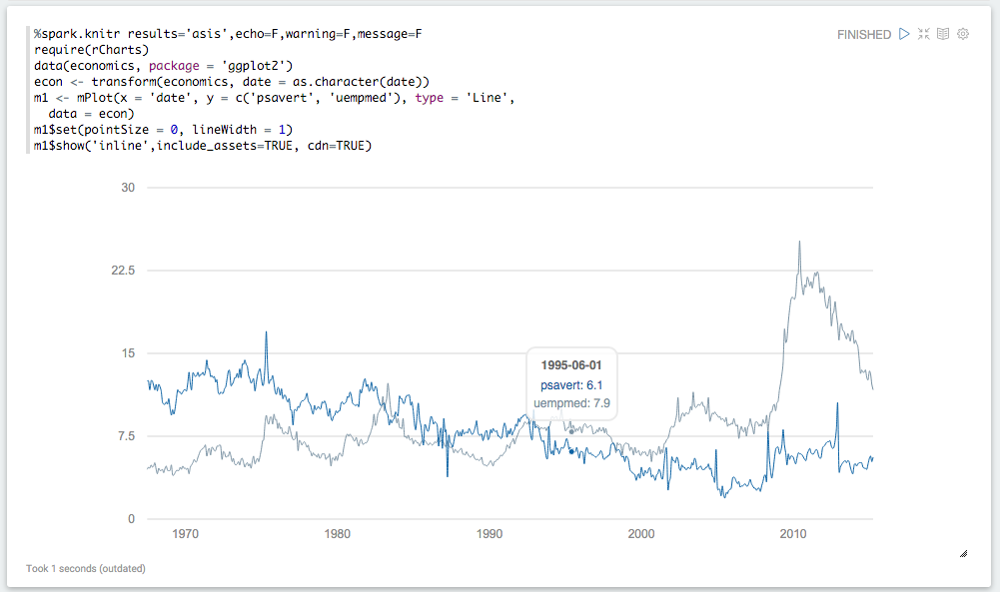

Efficient Algorithm for Ear Decomposition | Jan 2016 - August 2016
- Research project under the guidance of Prof. Kishore Kothapalli and Dr. RamaKrishna.
- The Work has been done to break the time complexity of an existing algorithm of Ear Decomposition(an algorithm to find the Bi-connectivity of a graph.) and we concluded with 2X Speed Up. Published at Cologne Twente Workshop 2017, Cologne, Germany.
Path Problems in Temporal Graphs | Monsoon 2015
- Honors project under the guidance of Dr. RamaKrishna.G
- Implemented an Algorithm to find the fastest path among all Shortest paths in Temporal Graph which have time stamps and weights on each edge. This project is completed and soon we are going to publish it.
Crowd Steering (MIT Media Labs) | Summer 2015
- A MIT funded project, worked under the guidance of Dr. Lavanya and Prof. Ramesh Raskar
- Crowd steering with GSM/CDMA Mobile Tower Subscriber VLR count. With reference TRAI report about 84% of Indian population carries mobile phones. The smart approach of estimating the crowd count from mobile tower VLR latching count. The intention of the project is to separate the resident crowd and overflow moving crowd. The steering is performed with reference to geographical location and the position of the mobile towers.
R Interpreter in python | May 2016
- Course project under the guidance of Dr.Sridhar Chimalakonda(IIIT-Hyderabad) at IIIT Sricity.
- I made an Interpreter for my own syntax using Python and R, the list of functions and the source code is available on Github Link
- Because of my project complexity and my preformace, I was awarded honours certificate in that course. Certificate

TCP/UDP Multi-Client Server | Summer 2015
- Course project under the guidance of Dr. Bruhadeshwar Bezawada(IIIT-Hyderabad) at IIIT Sricity.
- The main objective of this project is to make a server which accepts multiple clients and response to them, individuals. while working on this project I have acquired knowledge on socket programming. I have extended this project during my project at FinsolTech.
T.A Application Portal | Monsoon 2014
- Course project under the guidance of Dr. Vikram Pudi(IIIT-Hyderabad) at IIIT Sricity.
- Developed a platform where a student can apply for T.A post for varies courses
- where as a professor can see all the students applied to his course, can shortlist by applying various filters like CGPA, course grade etc and if any student is selected a confirmation mail will be sent to student and academic office.
- Developed using web2py framework using Python as scripting language.